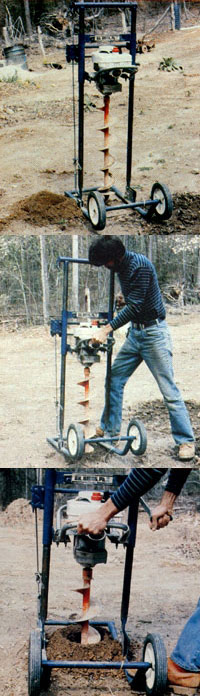

Two years with this fine posthole drill has given us the confidence to recommend that you...
Ah, the joys of excavating postholes with one of those wonderful double-handled, scissorslike, split-scoop tools . . . you remember, the implements that will eventually nibble out a fair-sized cavity if you work at it long enough and hard enough. Think about plunging the blades into the not-always-soft earth with all your might . . . opening the handles so the device grabs a bite of dirt . . . pulling up . . . trying to deposit the cup's worth or so of soil in a neat pile before all the material spills back into the hole again . . . and then repeating the whole process several hundred times over the span of an afternoon.
Who among us could do without the aching back, the muscle spasms, the blisters, and the sore shoulders brought on by that exercise? Well, if your answer is a resounding "me!"-and if you have a sizable patch of ground to fence you might want to "consult" with Dr. Diggs. This gasoline-powered posthole digger is only one of the best little around-the-farm worksavers we've run across in a long time. As you can see in the accompanying photos, the unit looks sort of like an oversized drill press. (You might also notice that our model shows the battle scars of long hard use: a testament to its popularity among MOTHER stafers, and to its ability to perform well regardless of wear and tear.) In fact, the out-and-out simplicity of the contrivance is what makes it one very special machine!
Dr. Diggs is "motivated" by a small, light (but more than adequate), 3-HP, two-cycle engine . . . which turns a tempered steel auger that not only bores a 6"-wide, 30"-deep hole in the ground in nothing flat but-at the same time-actually lifts displaced dirt to the surface and distributes the loam neatly around the fresh cavity. A replaceable cutting blade at the tip of the bit slices through roots and other hard soil-borne materials, too!
The unit also features a sturdy welded tubular-steel stand, which holds the power assembly steady. And mounted within that framework is a 3:1 gear-driven winch, connected to the engine-and-auger component by a 2,000-pound-test steel cable. To lower or raise the bit, you simply turn a crank handle. Furthermore, if you happen to need a vertical hole in steeply sloping ground, you'll find that the earth drill is adjustable at the base and can be tilted to almost any angle (within reason) necessary to accommodate uneven terrain.
Perhaps best of all, though, the entire unit is eminently portable . . . you can pull Dr. Diggs around on its ten-inch wheels with relative ease. And because of the tool's compact size, it'll allow you to bore postholes in tight places (one staffer used it to bore pea-trellis holes . . . wheeling the digger among the raised beds in his garden) that you wouldn't be able to reach with a tractor-mounted auger.
Admittedly, Dr. Diggs isn't inexpensive. The price for the complete assembly-power unit, stand, and standard 6" auger-is $366 . . . plus 10% for shipping within the contiguous 48 states (add 15% to the base price for delivery to Alaska, Hawaii, Puerto Rico, or Canada). On the other hand, though, if you're going to be sinking a lot of posts over the next several years, this is one doctor that might save you both physical hardship and money. And by the way, the machine just could have some incomeproducing potential. In our neck of the woods, the more common power-driven posthole diggers (which have no stand and often must be wrestled by two people) rent out at $25 for four hours ... and $38 for a day!
In any event, the makers of Dr. Diggs will be happy to send you an information sheet about their product with a full listing of prices and optional accessories (which include a wide range of augers in diameters from 2" to 8", a wood-boring bit, and diamond- and tungsten carbide-tipped drills). Just write to the folks at DeepRock Manufacturing Company, Dept. TMEN, 469 Anderson Road, Opelika, Alabama 36802 . . . or call 800/633-8774, extension 469.
|
 Dr. Diggs, the posthole specialist, drills a cavity faster (almost) than you can say ""ahh!"" |
|
|